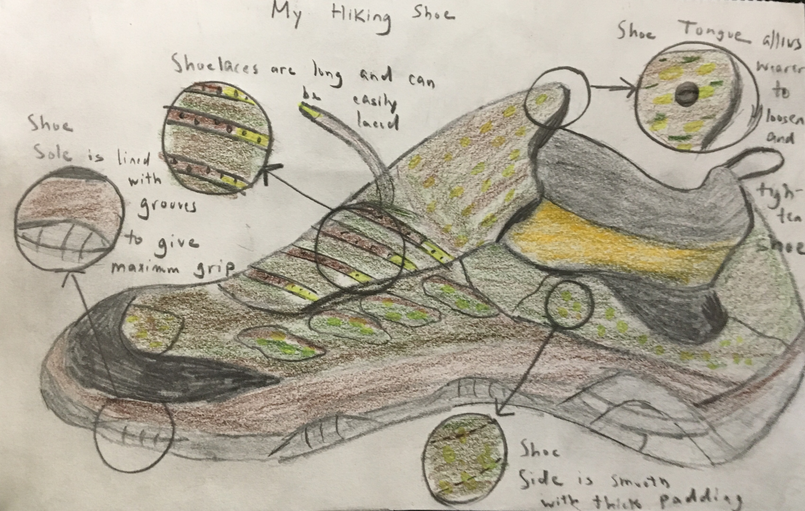

Hiking Shoe

Mediums: Prisma Colors, Color Pencils, Printer/Sketchbook Paper
This was my final scientific sketch, and the only one I did which didn't feature an animal. I sketched my hiking shoe, since I found its design to be very interesting and fun to draw. One of the upsides of doing this sketch which I didn't get when I was doing with other sketches was texture, since with animals, texture is harder to convey, but with this shoe, the texture varies from the smooth tongue to the grooved sole. This sketch was unique and so it was fun in a different way from the others.